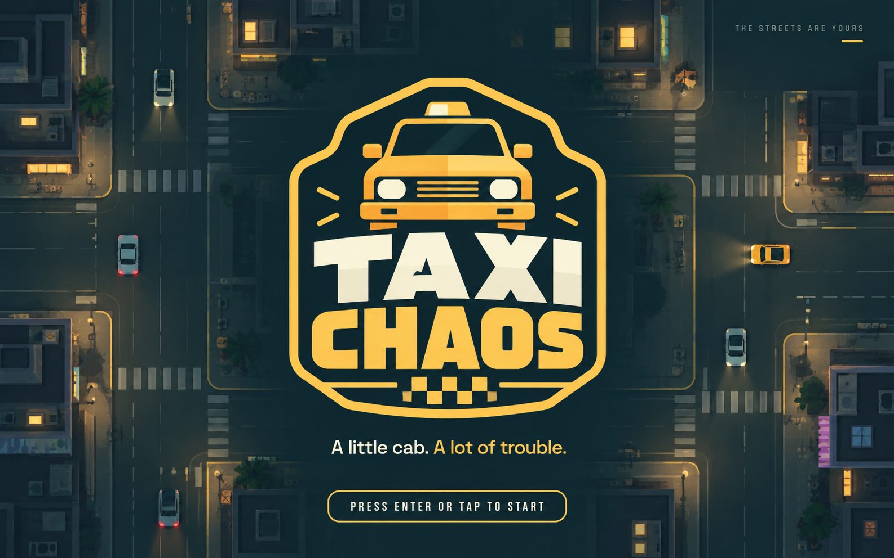
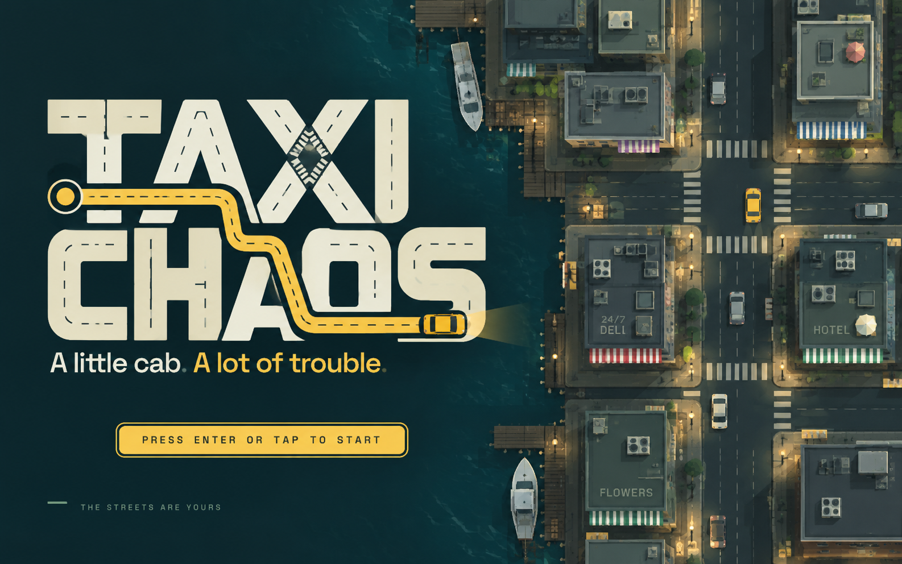
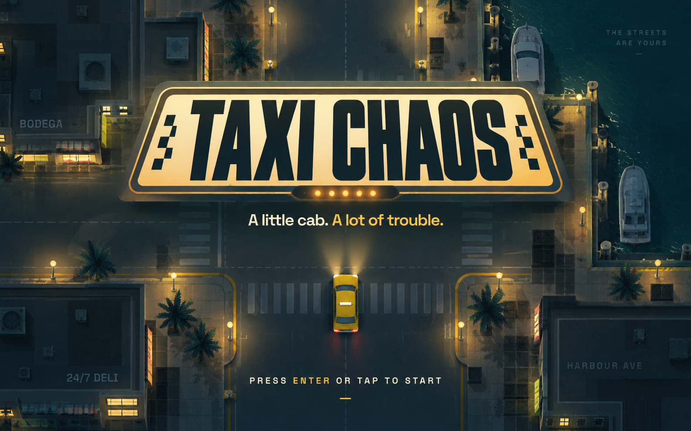
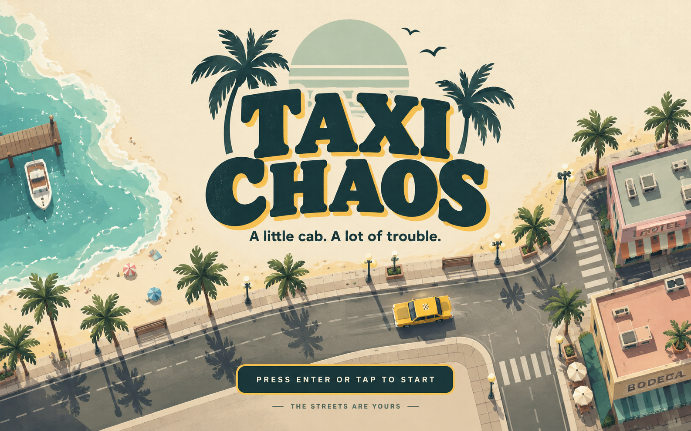
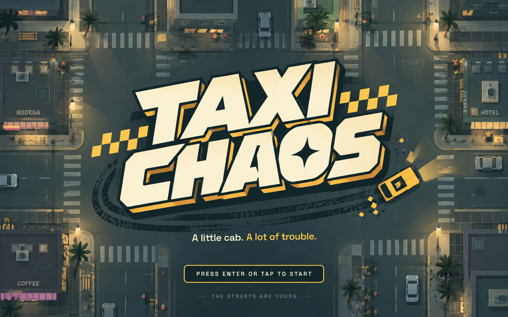
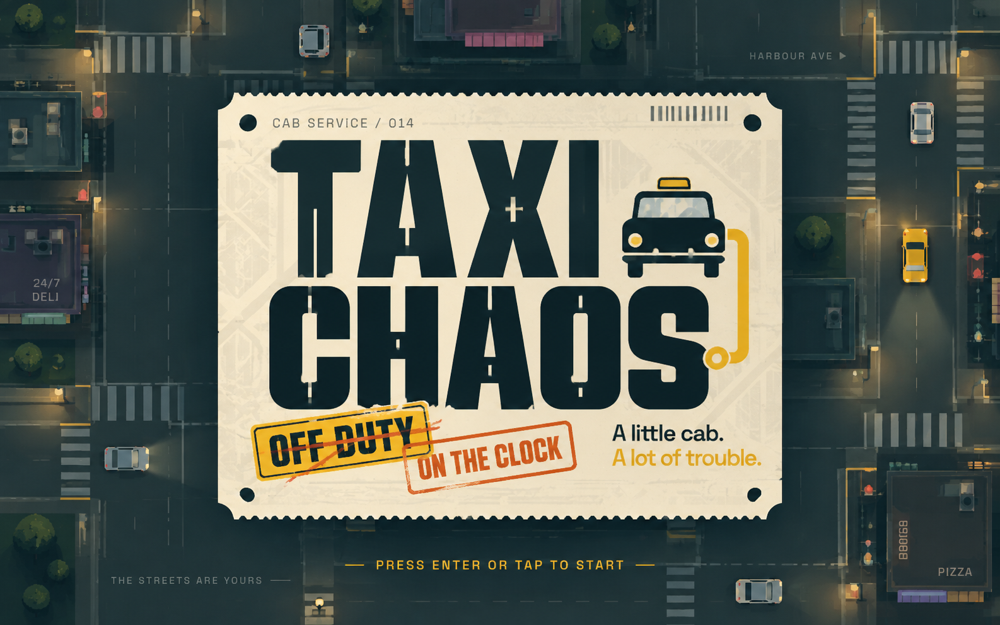

01 / Cab Badge
A compact taxi shield with upright lettering and a front-view cab emblem. The most versatile standalone mark.

02 / Street Grid
Road markings run through the letters; a yellow route ties the wordmark to the overhead city. The strongest connection to gameplay.

03 / Night Meter
Tall condensed letters inside an illuminated roof sign, set over a quiet harbour junction. A cinematic night identity.

04 / Coastal Postcard
Soft slab lettering, warm paper, mint sun, palms and a seafront road. A brighter coastal travel-poster direction.

05 / Controlled Skid
Slanted block lettering, tight yellow shadows and tyre arcs with a sliding cab. The most energetic arcade direction.

06 / Dispatch Ticket
A perforated dispatch ticket with stencil lettering, cab pictogram and shift stamps. A utilitarian printed identity.